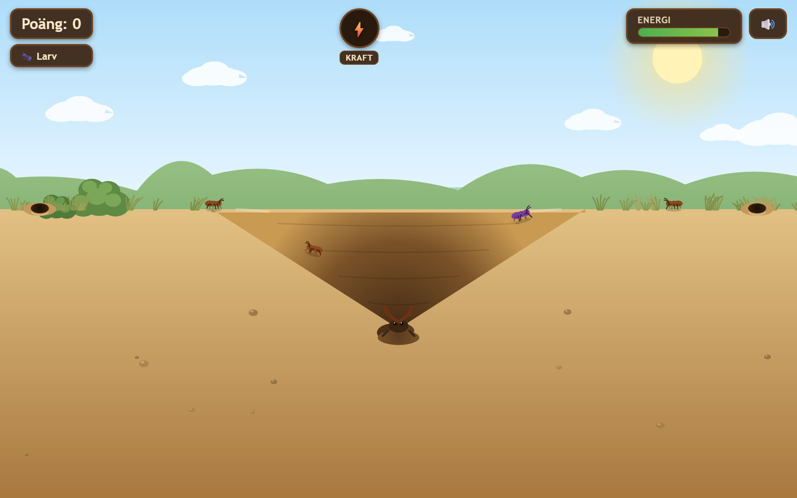
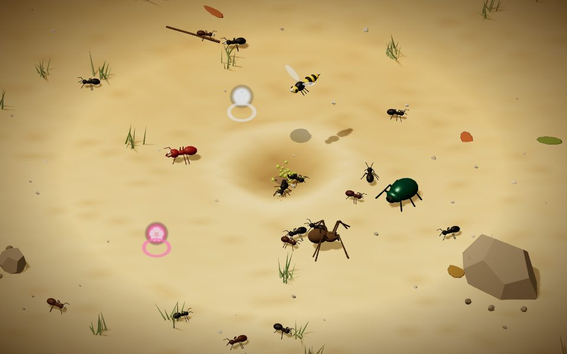

Klassisk2D
Det ursprungliga arkadspelet. Du ligger nedgrävd i botten av gropen och knuffar ner myrorna längs kanten.
- Snabbt att lära sig, perfekt på mobilen
- Steklar, regnväder och kraftskakning
- Väx från larv till jättemyrlejon

Ny!3D
Isometriskt actionspel à la Diablo. Gå runt på sandslätten, gräv ner dig och lägg bakhåll för bytet.
- Fiender från soldatmyror till en bönsyrsa som boss
- Kraftföremål, kombos och sandskalv
- Kan installeras som app på Android och dator